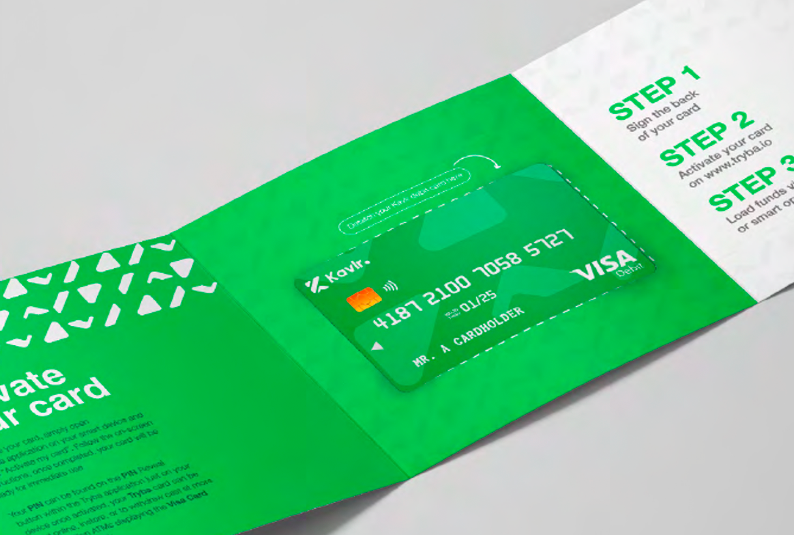

The Context
Tryba is a digital banking platform offering banking, business tools, and payment solutions to individuals and SMEs in Nigeria. In a market crowded with fintech startups all claiming to be 'the intelligent bank,' Tryba needed design that was both functionally rigorous and emotionally distinctive — a platform that looked as trustworthy as a traditional bank but felt as intuitive as the best consumer apps.
The Objective
Design the complete visual identity for Tryba's card products — both personal and business Visa cards. Create the mobile app UI for banking, payments, and mPOS (mobile point of sale) functionality. Develop a social media campaign system that could sustain daily content across multiple platforms while maintaining brand coherence.
The Approach
The card design was treated as a physical brand touchpoint — something users would carry in their wallets and show to others. The business card used a premium dark aesthetic with gold accents; the personal card used Tryba's signature blue with flowing gradients that suggested movement and progress. The app interface prioritised clarity: large readable balances, simple navigation, and a card-management flow that made complex banking operations feel effortless. Social media design used lifestyle photography with bold typography overlays — making banking feel aspirational rather than merely functional.
The Execution
Justin designed: the Tryba Business Visa card with premium black and gold treatment; the Tryba Personal Visa card with signature blue gradients; the mobile app interface including dashboard, transaction history, and card management; the mPOS (mobile point of sale) interface allowing merchants to accept in-person payments via QR code; social media campaign templates and content across multiple formats; brand communications including app store screenshots and launch materials; and the card welcome pack with activation instructions and brand storytelling.

The Impact
Tryba's card designs became one of the platform's most recognisable brand assets — the physical embodiment of the digital experience. The social media system enabled consistent daily output without requiring constant creative direction. The mPOS interface opened a new revenue stream by allowing Tryba to serve merchants directly, not just consumers. The design work positioned Tryba as a serious player in Nigeria's competitive digital banking landscape.
"The physical embodiment of the digital experience."